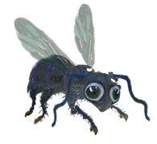
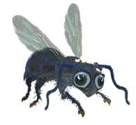
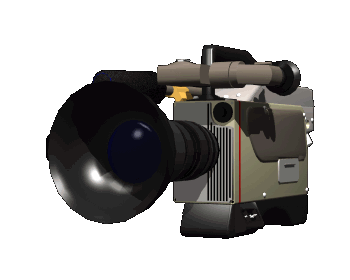
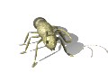
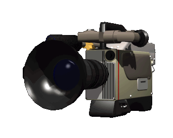
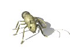

Hey what's up you guys today I'm going to show you how to get deer ticks off of your pants but the best way to do this is to not get deer ticks to begin with but that's not always possible so watch closely right there on my leg is a deer tick and it could carry lyme disease but not all of them do but some do and those ones are scary because you really dont wanna get bitten by them because if you do you might develop a meat allergy did you know justin bieber has lyme disease it can infect anyone so you need to be careful you might also be exhausted for the rest of your life so im at shirley chisholm state park where there are a lot of ticks because we're close to water i think the history of this place is pretty interesting apparently a few dead bodies were discovered here way back when i think it used to be a landfill but now it's filled with ticks so in my opinion it still kind of is a landfill but imagine going for a walk in the landfill and finding a dead body well I guess you probably wouldnt walk in the landfill it might stink ok but think about walking in the park and finding a dead body oh my god I don't even know where i'd start maybe the police but if it was a fresh body maybe i'd wait for someone else to find it since i wouldn't want to be an accessory to murder in case the police think i had something to do with it and not to mention if i stand in a field with a dead body there's a good chance there are ticks there and they might bite me and then I could get lyme disease you can also get lone star disease which is what i think actually makes you allergic to meat and i think you can still eat fish i always thought it'd be funny because im a vegetarian so it's not even like i need to worry about eating meat but you really do find yourself in an ethical quandary it's like the trolley problem and what if the murderer is hiding in the bushes and then tries to kill you or worse wants to give you lyme disease so you have to live with your body wasting away there was a time I thought I had siphyllus in college and when I went to the doctor she said I definitely didn't have syphillus but what if i do i wouldn't even know until it starts to eat my brain and then it's too late for my doctor to do anything so i really hope she was right i had to take my pants off and point to some spots but tons of things give you spots like ticks will leave a mark once at an in-n-out i felt an itch on my calf and as I went to scatch it i realized it was a tick and i pulled my pant leg up and stared right at it and flicked it off and i sort of freaked out and then stepped on it and squished it

 

 


